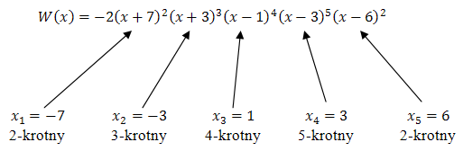
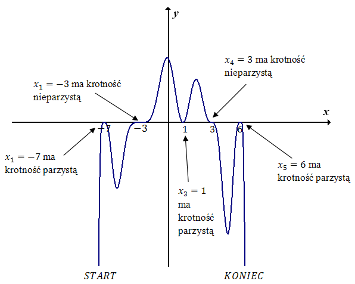

Naszkicuj wykres wielomianu \(W(x) = -2(x + 7)^2(x + 3)^3(x - 1)^4(x - 3)^5(x -
6)^2\).
Wielomian jest dany w postaci iloczynowej, więc zaczynamy od wyznaczenia
miejsc zerowych: \[-2(x + 7)^2(x + 3)^3(x - 1)^4(x - 3)^5(x - 6)^2 = 0\\[6pt] x + 7 = 0 \quad
\lor \quad x + 3 = 0 \quad \lor \quad x - 1 = 0 \quad \lor \quad x - 3 = 0 \quad \lor \quad x -
6 = 0\\[6pt] x = -7 \quad \lor \quad x = -3 \quad \lor \quad x = 1 \quad \lor \quad x = 3 \quad
\lor \quad x = 6 \] Teraz określamy krotności tych pierwiastków: 
Nasz wielomian jest stopnia \(16\), a współczynnik liczbowy przy \(x^{16}\)
(po wymnożeniu nawiasów) jest ujemny (jest równy dokładnie \(-2\)).
Stopień
wielomianu jest parzysty oraz współczynnik liczbowy przy \(x\) w najwyższej potędze jest ujemny,
więc zaczynamy rysowanie wykresu od lewego dolnego rogu układu współrzędnych: 